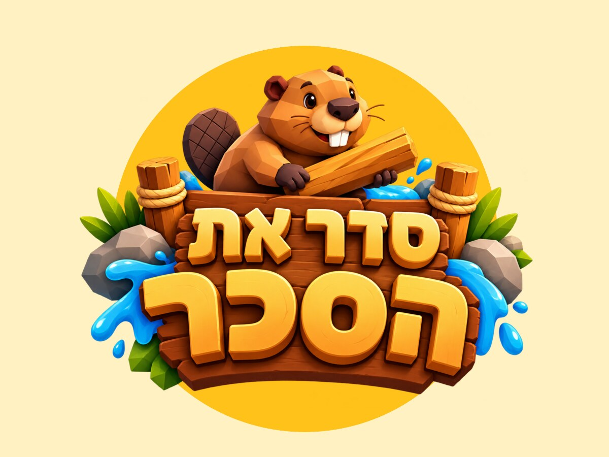
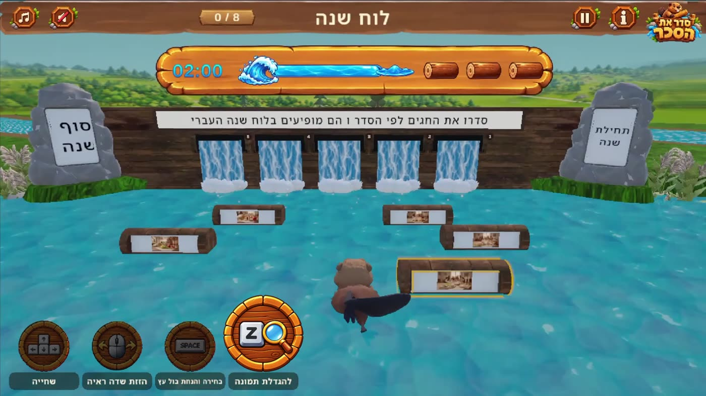
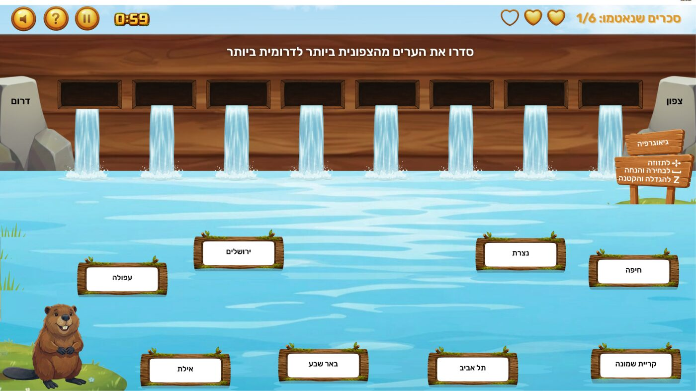

חזרה לפרויקטים
סדר את הסכר: מדו-ממד לתלת-ממד
משחק אחד שאפשר למלא בכל תוכן לימודי. התחיל כמשחק דו-ממדי והתפתח לגרסה תלת-ממדית עם מחולל תוכן, במסגרת פיילוט שהתקבלתי אליו.
- קהל יעד
- תלמידים בכיתות ד'–ט'
- התפקיד שלי
- אפיון, תוכן, פיתוח ביוניטי, עיצוב וצד שרת
- כלים
- Unity, C#, Codex, Meshy
- מסגרת
- דו-ממד בקורס, תלת-ממד בפרויקט פיילוט

האתגר
משחקים לימודיים נבנים בדרך כלל סביב נושא אחד. כשהתוכן משתנה, צריך לבנות משחק חדש.
המטרה הייתה מנגנון משחק אחד שאפשר למלא בכל תוכן שהמורה צריכה: ציר זמן היסטורי, שלבים בתהליך מדעי, רצף של אירועים בסיפור. המשחק צריך להתאים לטווח גילאים רחב, מכיתה ד' ועד ט'.
שתי גרסאות

תלת-ממד
דו-ממדהגרסה הדו-ממדית
אפיינתי את המשחק, פיתחתי את התוכן ופיתחתי אותו ביוניטי באופן ידני. הגרסה הזו הגדירה את העקרונות הפדגוגיים והמכניים של משחק הסדר.
הגרסה התלת-ממדית (פיילוט)
נבחרתי לפרויקט פיילוט, ובו פיתחתי גרסה תלת-ממדית שמבוססת על עקרונות הגרסה הראשונה, כולל מחולל תוכן בצד השרת.
לשחק בגרסה התלת-ממדיתהתלת-ממד בפעולה
מה התווסף בתלת-ממד
- מחולל תוכן בצד השרת: ממשק שבו מזינים את הפריטים ואת הסדר הנכון, והמשחק נבנה מהם. כך המשחק הפך מתוצר חד-פעמי לכלי שמורים יכולים להשתמש בו שוב ושוב.
- פיתוח בעזרת AI: שימוש ב-Codex לכתיבת קוד וב-Meshy ליצירת האובייקטים התלת-ממדיים. כך הצלחתי להגיע לסביבה תלת-ממדית עשירה בזמן קצר יחסית, ולהתמקד בחוויית הלמידה עצמה.